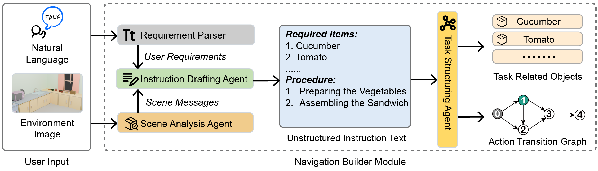
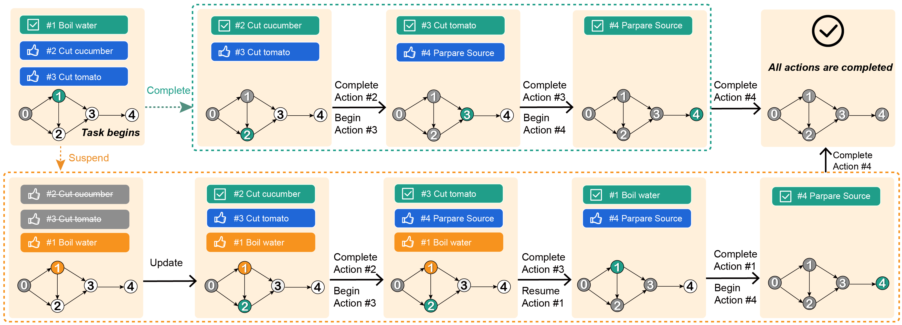
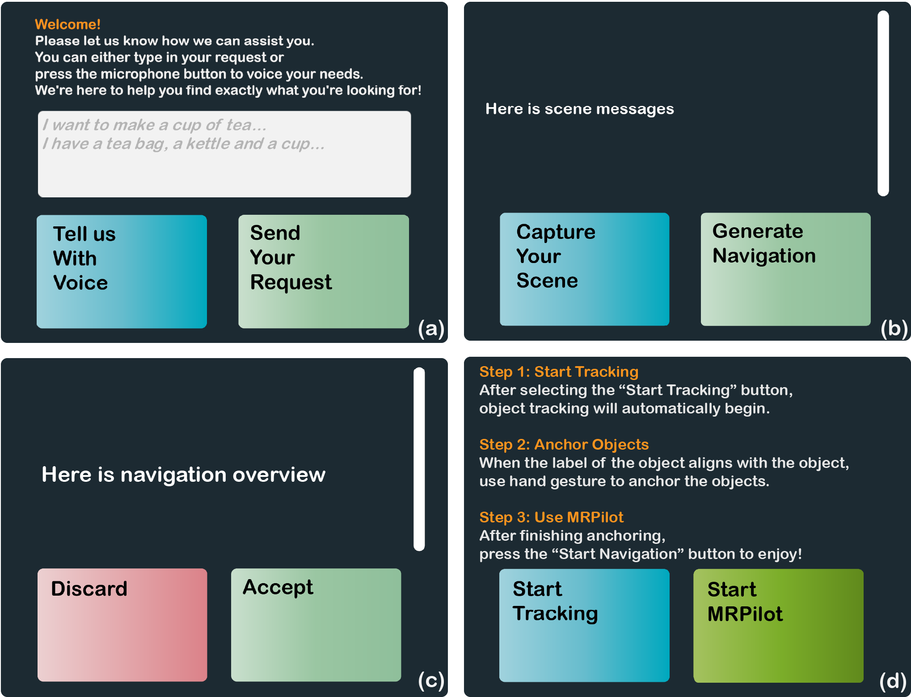
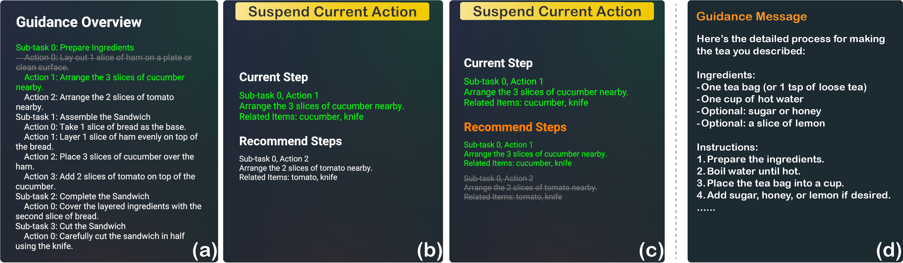

People often need guidance to complete tasks with specific requirements or sophisticated steps, such as preparing a meal or assembling furniture. Traditional guidance often relies on unstructured paper instructions that require people to switch between reading instructions and performing actions, resulting in an unsmooth user experience. Recent Mixed Reality (MR) systems alleviate this problem by giving spatialized navigation but demand an authoring step and, therefore, cannot be easily adapted to general tasks. We propose MRPilot, an MR system empowered by Large Language Models (LLMs) and Computer Vision techniques, offering responsive navigation for general tasks without pre-authoring. MRPilot consists of three modules: a Navigation Builder Module using LLMs to generate structured instructions, an Object Anchor Module exploiting Computer Vision techniques to anchor physical objects with virtual proxies, and an Action Recommendation Module giving responsive navigation according to users’ interactions with physical objects. MRPilot bridges the gap between virtual instructions and physical interactions for general tasks, providing contextual and responsive navigation. We conducted a user study to compare MRPilot with a baseline MR system that also exploited LLMs. The results confirmed the effectiveness of MRPilot.




BibTex Code Here